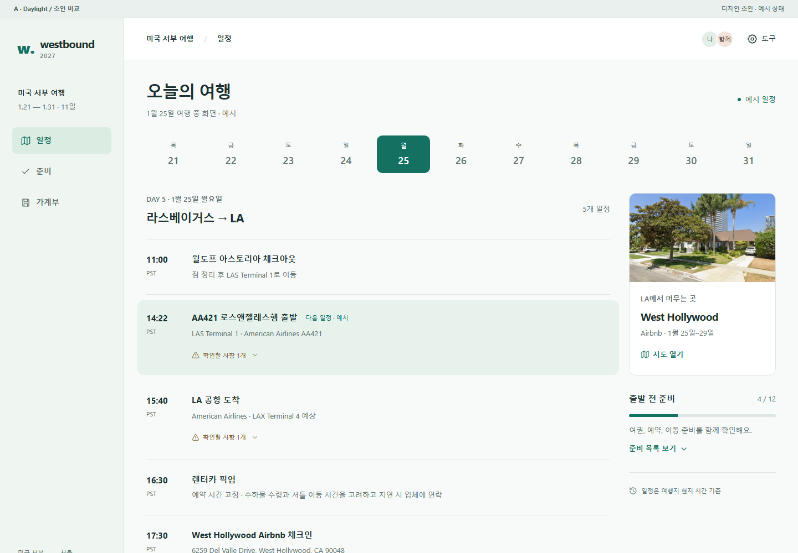
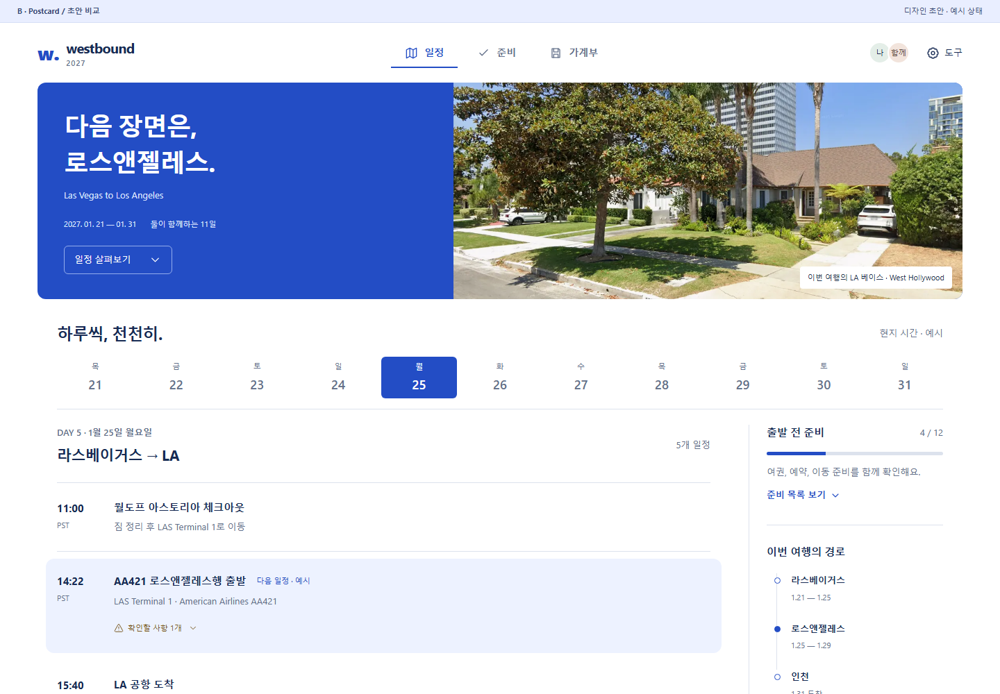
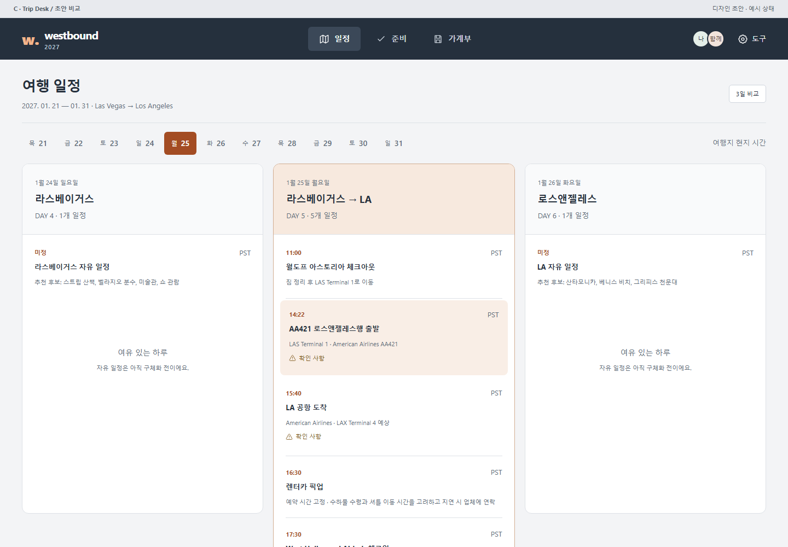

A
일상적인 여행 도구Daylight

필요한 순간에, 필요한 정보만.
옅은 세이지와 흰 바탕. 일정이 중심에 놓이고 숙소와 준비는 옆에서 보조합니다.
- 강점
- 가독성과 일상 사용의 균형
- 고려할 점
- 세 안 중 브랜드 개성은 절제됨
PC에서 함께 계획하고, 여행지에서는 바로 확인하는 화면.
색상뿐 아니라 탐색 방식과 정보의 우선순위가 다른 세 안입니다.

옅은 세이지와 흰 바탕. 일정이 중심에 놓이고 숙소와 준비는 옆에서 보조합니다.

선명한 블루와 실제 사진. 상단의 여행 장면 아래로 날짜와 일정이 이어집니다.

단정한 차콜과 앰버. PC에서는 3일을 비교하고 모바일에서는 선택한 하루에 집중합니다.
현재 모바일 화면은 헤더와 도구가 먼저 공간을 차지해 실제 목록이 늦게 나타납니다. 세 안 모두 여행 정보는 압축하고, 기능 메뉴와 날짜 탐색을 분리했습니다.
눌러볼 수 있는 것 날짜 이동, 일정·준비·가계부 전환, 준비 체크, 주의 사항 펼치기, 지출 필터, 지도 링크.
초안 범위 기본 설정의 일정과 기존 숙소 사진을 사용했습니다. 시각·체크 상태·지출은 예시이며, 편집·서버 저장·인증·오프라인 기능은 연결하지 않았습니다.
선택 가이드 두 사용 장면의 균형은 A, 여행의 분위기는 B, PC에서의 계획 검토는 C. 한 안을 기반으로 다른 안의 장점을 조합해도 좋습니다.